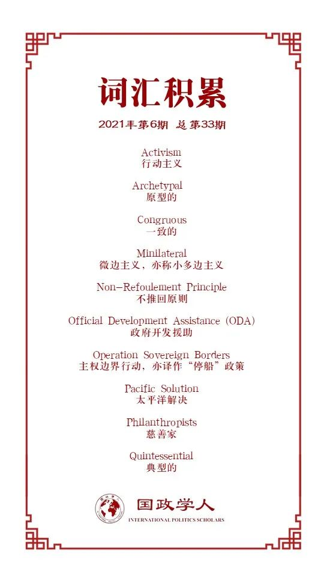

收录于合集

作品简介
【作者】 Gabriele Abbondanza ，悉尼大学国际关系高级讲师。其重点研究澳大利亚和意大利的外交和安全政策、国家实力、 以及区域、中等国家和大国的国关理论。
【编译】 张彦赪（国政学人编译员，悉尼大学国际关系专业）
【校对】 何伊楠
【审核】 王嘉许
【排版】 韩柯
【美编 】杜丛竹
【来源】 Abbondanza, G. (2021). Australia the ‘good international citizen’? The limits of a traditional middle power. Australian Journal of International Affairs , 75(2), 178–196. https://doi.org/10.1080/10357718.2020.1831436
【归档】 《国际关系前沿》2021年第6期，总第33期。
期刊简介
《澳大利亚国际事务杂志》（ Australian Journal of International Affairs, AJIA ），该杂志致力于发表关于国际政治、社会、经济和法律问题的高质量学术研究，尤其是（但不仅限于）亚太地区。其中，该杂志通过发表研究文章、审稿评论文章以及评述文章来审查国际关系中的热点时事。该刊物一年出刊六次，其2019年影响因子为1.097。
澳大利亚是“国际好公民”吗？
传统中等强国的局限性
Australia the ‘good international citizen’? The limits of a traditional middle power
Gabriele Abbondanza
内容提要
一个“国际社会”并不能简单地理解成一个“国际体系”，传统意义上来说，国际社会要求国家认为自身受到共同规范和集体制度的约束。尽管缺乏一个通用的定义， “国际好公民”（GIC）的概念常被用来描述国际社会中守法和合作的国家。而中等强国（middle powers）的概念则有更悠久的历史，并同样存在定义不明确的问题。“中等强国”可以用来指代一个具备相当多的物质实力但只能位列第二梯队的国家、一个常表现出合乎规范和多边主义态度的国家、一个自我认同其地位，并作出相应表现的国家；或者在极少数情况下，以上条件都满足的国家。
将这两个概念展现在一起有两个原因：第一，它们彼此关联；第二，它们都适用于澳大利亚。从第一个方面而言，中等强国理论 (middle power theory, MPT) 根据一系列标准定义了中等强国，而在其定义参数中，至少有两个反映了“国际好公民”的概念。在第二方面，澳大利亚经常被包括政治家、学者、律师和记者在内的广泛人群公开或暗示性地描述为国际好公民。其中，最有力的声音来自澳大利亚前外长埃文斯（Evans），他在 1988 年首次公开将此概念与澳大利亚联系起来。因此，“国际好公民”身份在澳大利亚政治话语中的重要性显而易见，这也归功于许多出版刊物对该表达的专门使用。另一方面，澳大利亚与中等强国的联系渊源已久，这要归功于埃瓦特（Evatt）在 1945 年旧金山会议筹备期间大量的外交工作。与“国际好公民”类似，但在更宽泛的范围内，澳大利亚作为中等强国一直是大量学术研究的对象，以至于它通常被认为是中等强国的“原型”、“理想”、或“典范”。
本文将探讨上述两个概念并从中得出主要的纳入标准（inclusion criteria），随后根据五个文献参数审视澳大利亚的主要政策。这五个文献参数分别是：国际法、多边主义、人道主义和理想主义、行动主义、一致的身份与国内政策。本研究发现，从理论角度来看，澳大利亚不再是 “国际好公民”，因而也不再是中等强国的“典范”；相比之下，澳大利亚是一个“中立的国际公民”，因此，其是传统但非“典型”的中等强国。值得注意的是，本文并不试图对该国的外交政策进行批评，而是旨在专门寻求对目前有关它的辩论所产生的理论影响进行一个明确的评估。
文章导读
01
国际法
尊重国际通用规范或许是最重要的审查标准，这一点在涉及“国际好公民” 概念的研究中常被提及。20 世纪中叶以来，澳大利亚在尊重国际规范上始终享有声誉。它在第二次世界大战中与轴心国作战，为战后自由秩序的建立做出了贡献、与加拿大在联合国建立中等强国概念方面发挥了显著作用（推动生成了联合国宪章第 23 条和第 44条），从而推进联合国的整体目标和手段的发展、以及参与一些联合国批准的和平支持行动，这些都只是澳大利亚一直以来遵守乃至促进现代国际法发展的主要例子。
澳大利亚最具争议的问题是其对海上寻求庇护者的政策。澳大利亚的首次离岸处理政策可以追溯到1960年代，尽管第一波显著的移民潮是在越南战争结束后的1976年才出现。1992 年，基廷（Keating）政府对所有试图在没有有效签证的情况下抵达该国的人实施了无限期强制拘留。在当年，仅有澳大利亚实施这样严苛的政策，而这也被定性为“西方国家最糟糕的做法”。在 9/11 恐怖袭击之后，随着政治辩论的焦点转向国家安全，霍华德（Howard)政府将澳大利亚关于难民的问题安全化，这一过程导致了以后高度极化的“太平洋解决”政策（Pacific Solution），其中便涉及对所有海上寻求庇护者的离岸处理。
如前所述，联合国难民署（2020 年）在该领域是最有发言权的机构，几乎与国际特赦组织等全球非政府组织相当。而澳大利亚国内的抗议活动则来自于当地非政府组织、难民拥护者和绿党、以及在首届陆克文政府执政期间（2007-2010）的工党。该争论的主要聚焦于澳大利亚对国际法的遵守，尤其是对 1951 年联合国《关于难民地位的公约》及其 1967 年议定书的义务。具体而言，公约第 31 条规定，“缔约国不得因其非法入境或存在而对难民进行处罚 […] 缔约国不得对此类难民的行动施加限制。”第 33 条规定，“任何缔约国不得以任何方式将难民驱逐或遣返到其生命或自由将受到威胁的领土边界。”简而言之，澳大利亚全方面禁止了未经授权的进入，因而违背了第 31 条规定。而澳大利亚在2013年“主权边界行动”（Operation Sovereign Borders）中开始实施的“返航”政策，则违背了第33条规定以及不推回原则（non-refoulement principle）。
02
多边主义
历史上，澳大利亚一直活跃于多边主义，多年来一直处于印太多边主义的最前沿。澳大利亚与印太地区有着相当紧密的战略联系，其中最主要的代表即为与美国和新西兰的联盟——澳新美安全条约（ANZUS）、与日本的战略伙伴关系、以及在有限程度上与印度不温不火的战略关系。然而，当前澳大利亚有越来越偏离传统的多边路径的切实趋势，这有可能损害其来之不易的多边主义口碑。首先，不可否认的是，区域组织比全球组织更为普遍，这表明澳大利亚偏好那些与其经济和战略利益息息相关的政策。虽然该进程在很大程度上成功地将澳大利亚的区域主义与其中等强国外交政策联系起来，但它也暗示澳大利亚正逐渐偏移其从上个世纪末以来（例如和联合国相关）的国际参与。这样的偏离由两个因素导致：一方面，该国主要政治力量的态度分歧具有很强的影响力：工党以遵循联合国动议的态度为人所知；而联盟党则更偏向与美国建立稳固的安全关系，并通过经济外交与印太地区其他国家联结，而对全球那些不会直接影响澳大利亚倡议的现象置之不理。另一方面，该国对全球治理存在普遍的不满，其中联合国则首当其冲。对澳大利亚而言，所有这一切都意味着政策议程对多边主义的偏离。
此外，从一个更普遍的视角来观察澳大利亚和更广泛的印太地区关系的话，由于澳大利亚本身不认为自己是个十足的“亚洲国家“，印太区域也不接受它是。这种“局限性”在现有文献中经常被讨论，并将阻碍澳大利亚的多边主义，取而代之的是日益增多的的双边和微边（minilateral）倡议。公平地说，这样的现象也是基于一个广泛的印太地区自身的复杂性，及其带给澳大利亚的挑战，这些因素在评估澳大利亚在其中的角色时不应被低估。此外，在澳大利亚和中国的双边关系上，尽管巨大的经济收益大大缓和了国家特质上的迥异，却也导致澳大利亚在涉及中美博弈的多个领域中，都面临一个自相矛盾的战略模糊性。即便区域环境因素能够充当澳大利亚在地方参与方式上的高度选择性的借口，现实不可置否：即越来越多的区域关系建立在以损害传统多边主义的代价上。
03
人道主义和理想主义
人道主义和理想主义是国际好公民的内在组成部分，其中最直接的外交政策形式即对外援助，包括人道主义援助和发展援助。与先前讨论过的诸多主题一样，澳大利亚在财政承诺方面也曾令人印象深刻：即从 1960 年代一直到 2012 年都保持波动增长。然而，这种形象正日益受到国内政治态度的破坏。由于联盟政府自2013年开始便持续削减预算，澳大利亚 2018 年的政府开发援助 (ODA) 在名义上与十年前的提供相当。从延展的时间范围来看，政府开发援助和国民总收入（ODA/GNI）比率在 1974-1975 年为 0.47，而2018年到2019年的比率则不及当年一半，创下0.21的历史新低，这与联合国建议的0.7相去甚远。
在理解澳大利亚外交政策中的全球主义、理想主义和人道主义成分的讨论中，气候变化的议题不容缺席。最新的一项研究指出，澳大利亚在国内的适应气候变化进程中有所进展，尤其是在沿海和农业地区。然而，在国际层面，澳大利亚则因其在2016年巴黎协定和2019年太平洋岛国论坛上的表现饱受争议。学者在审视堪培拉政府最新的环境政策时发现，“澳大利亚现任政府正持续破坏其对减排的承诺及其自身减排政策的完整性和可信度 […] 尽管这些战略可以满足短期的政治经济利益。”与此同时，气候变化已成为澳大利亚最为两极分化的问题之一，化石燃料密集型产业及其保守派盟友一再阻碍改善气候变化的进展，而这一情形又因“无法通过专业知识解决环境争议”而每况愈下。本质上而言，尽管美国在气候变化议题上更具争议的表现使得澳大利亚并非众矢之的，但其在减缓气候变化上的态度将严重损害其“国际好公民”的身份。
04
行为主义
在所有关于“国际好公民”应该是什么样的理论讨论中，超过半数的讨论明确指出需要采取积极方法，促进和执行联合国彰显的国际法。首先，澳大利亚是所有主要的核不扩散条约和国际出口管制条约的缔约方，其在推动这两项条约方面的作用是实质性的且被公认的。在最近的一次采访中，核不扩散和裁军中心主任拉梅什·塔库尔（Ramesh Thakur）表示，自 2013 年政府更迭以来，澳大利亚“降低了其对核不扩散和裁军的立场”。澳大利亚的国际好公民身份将被视为过去式还是仅仅在经历“动荡时期”仍待考量。不过，从澳大利亚向未曾签署核不扩散条约的印度出口铀的行为来看，其可信度已经受到了影响。
澳大利亚政治讨论中反复出现的第二个要素是尊重和支持基于规则的秩序。事实上，在 2017 年的外交政策白皮书中，诸如“规则”和“基于规则的秩序”之类的表述被使用了 85 次；而在该国的国际优先事项清单中，“制定和保护规则和规范”排在第一位。例如，澳大利亚支持世贸组织的行为规范，并且在南海问题上支持践行国际法，又或是在最新的新冠疫情中要求展开对病毒源头的独立调查并且在世界卫生组织内达成全面共识。这一系列事件中，澳大利亚在国际社会中的“行动主义”都有迹可循。然而，这种行为也颇具选择性，譬如在海上移民和气候变化问题上中备受争议的立场。
最后一点是关于澳大利亚对和平支持行动（peace support operations, PSOs）的讨论。有学者提醒道，澳大利亚对于和平支持行动的承诺扎根于1947年，它在很大程度上归功于埃瓦特（Evatt） 在联合国成立初期的大量活动。然而，该国与联合国的关系很大程度上受到国内执政党的影响：工党政府历来对此更为热情，而保守党政府则持谨慎态度。上述所有情况，以及澳大利亚参与了美国在阿富汗和伊拉克的战争，这些都明显偏离了主导的国际惯例的设定的轨迹，因此可能会进一步削弱澳大利亚长期以来的 “国际好公民”形象。
05
一致的身份与国内政策
现有关于“国际好公民”的文献往往强调国内政策的重要性，以及一个大体上能够反映国际好公民价值观的国家身份。的确，期望国际上所宣扬的内容与国内实际发生的事情之间的高度一致是合理的。根据各种可衡量的标准检验国内情况的话，澳大利亚可以确切地声称自己是世界上最发达的国家之一。联合国的人类发展指数（HDI）将三个主要参数纳入考量，即“长寿和健康的生活”、“知识”和“体面的生活水平”，从而评估社会和经济变量。其中，澳大利亚以其 0.938的指数在全球排名中位居第五，在指数非常高的群体里仍名列前茅。
不可否认，与 20 世纪相比，当今澳大利亚的人权得到了更好的保护，尤其是在“婚姻平等、反歧视法、性骚扰法、女性在职场的地位提升、国家残疾保险计划”等方面。然而，学者们已经就该领域采取的过度自由放任态度提出了警醒。例如，在妇女权利上，尽管多年来呈现了一个积极的趋势，但仍存有诸多澳大利亚政府似乎不愿意解决的问题，包括与背离联合国规定的最佳做法、澳大利亚土著妇女遭受的更高比例的暴力，以及更普遍的性别平等。简言之，虽然澳大利亚在人权保护领域有明显的积极趋势，但如果不加之约束，一些令人担忧的因素仍将持续影响澳大利亚国际好公民的地位。
06
结语
为了明确澳大利亚是否仍然是一个国际好公民，本文为 “国际好公民”的概念提供了一个专门的定义框架，从而促进了国际关系理论的这一利基，并评估了针对它的澳大利亚相关政策。文章亦例举了一些额外的定量证据以支撑本文的论据和结论，如借由衡量国家对全球社会“积极贡献”的指标——发展承诺指数 (CDI)。该指数是通过数百个指标计算得出的，而这些指标又与许多“国际好公民”相关的社会经济标准，以及中等强国理论的规范和行为标准相互关联。该指标呈现出一个明显的趋势：2003年，当CDI指数第一次发布时，澳大利亚位居全球第三，而如今排名第十四。该指数排名的快速下降似乎反映了文本的研究结果，其本质是澳大利亚对国际法的选择性遵守、对全球多边主义、人道主义参与和维护基于规则的国际社会的行动主义的背离、以及尽管多年来取得了进展，但并未完全吻合这些国际好公民价值观的国内社会生态。总而言之，澳大利亚是一个中立的国际公民，是传统意义上但并非典型的中等强国。
这样的地位不一定有损其外交政策的有效性，然而澳政府的新方向是否比旧时版本更为可取仍需要未来进一步的研究考量。
译者评述
长期以来，澳大利亚都被当做是中等强国的典范，并自诩国际社会中的好公民。作者在文章中构建了一个定义性框架，以近年来澳当局的一系列国内外政策为依据，对澳大利亚是否能够称之为“国际好公民”进行了综合性的评估。作者从大量相关文献中精粹了五条标准来定义“国家好公民”的身份，在综合审视澳大利亚对国际法的遵守，对多边主义、人道主义、行动主义的支持、以及一致的国际身份与国内政策后，作者认为澳大利亚并非是标准意义上遵守国际行为规范的国际好公民，在气候变化以及海上难民的问题中对国际法的选择性遵守都使其偏离了国际好公民的标准。[1]
此外，澳大利亚也表现出对于区域主义的偏爱，而渐渐脱离参与国际层面的多边主义。在中澳关系中，这一点则更为明显。尤其是拜登政府上台后，美方一再强调通过多边主义合作，应对中国崛起，而澳大利亚在其中扮演着美国忠实盟友的角色， 并凭借其印太地区中等强国的地位，在对华遏制战略中发挥着重要作用。例如，澳大利亚外交部长佩恩（Payne）在去年已宣布了四边技术网络（Quad Tech Network）的成立，[2]该技术同盟是四国集团在技术领域合作的具体平台，目的是通过联合美国、日本和印度，在技术上打压中国，一方面通过不同同盟国在全球供应链端的不同劳动力分工，排除中国的经济参与；另一方面则意图塑造国际技术治理规范准则。[3]值得注意的是，该四边技术网络由澳大利亚领导，该领导地位一是得益于澳大利亚的战略性地缘位置，二则在于其和其他三方国家都保持着较为良好的双边关系。不论是在新冠疫情中率先发起对新冠起源的独立调查，[4]还是引领四边技术网络同盟中，澳大利亚都展现出其意图逐步扩大自身在印太区域甚至国际影响力的雄心。在此过程中可以发现，国家的身份认同呈现出一个不断变化的动态过程，尽管二战后澳大利亚的种种表现都吻合“国际好公民”的标准，但如作者研究指出的那般，或许在目前，将澳大利亚视为中立性的国际公民是更为妥当的选择。[5]
本文在理论研究和现实意义上都具有一定价值。虽然并非国际关系的宏大理论，但作者在国际好公民和中等强国理论上另辟蹊径，用“评估”的角度，对比了不同时期下澳大利亚政策与其双重身份的吻合度，并为澳大利亚除去“国际好公民”的身份标签。[6]而这也带来了一定的现实价值意义：国家的身份认同并非是一成不变的结果，而是在一个变化的国际结构中、国内执政党派更迭下、经济发展里等多因素中不断更新，重塑的过程。一个国家的身份认同常常影响着他人及其自身对其行动的默认与期许，在目前持续低迷的中澳关系中，视澳大利亚为具有中等实力的、中立的国际社会公民或许能够带来对其行为更为理性冷静的考量。
参考文献
[1][5][6] Abbondanza, G. (2021). Australia the “good international citizen”? The limits of a traditional middle power. Australian Journal of International Affairs , 75(2), 178–196. https://doi.org/10.1080/10357718.2020.1831436
[2] Minister for Foreign Affairs. (2020). Australia strengthens global discussion on cyber and critical technology. Retrieved from: https://www.foreignminister.gov.au/minister/marise-payne/media- release/australia-strengthens-global-discussion-cyber-and-critical-technology
[3] Rasser, M. (2021). Techno-Democratic Statecraft for Australia and the Quad. The National Security College. Retrieved from: https://nsc.crawford.anu.edu.au/publication/18432/networked-techno-democratic- statecraft-australia-and-quad
[4] Dziedzic, S. (2020). Australia started a fight with China over an investigation into COVID-19 — did it go too hard? Retrieved from: https://www.abc.net.au/news/2020-05-20/wha-passes-coronavirus-investigation- australia-what-cost/12265896
词汇整理

文章观点不代表本平台观点，本平台评译分享的文章均出于专业学习之用, 不以任何盈利为目的，内容主要呈现对原文的介绍，原文内容请通过各高校购买的数据库自行下载。
好好学习，天天“在看”
国政学人
支持学术公益与知识传播
微信扫一扫赞赏作者 __赞赏
已喜欢，对作者说句悄悄话
取消 __
发送给作者
发送
最多40字，当前共字
上一页 1/3 下一页
长按二维码向我转账
支持学术公益与知识传播
受苹果公司新规定影响，微信 iOS 版的赞赏功能被关闭，可通过二维码转账支持公众号。